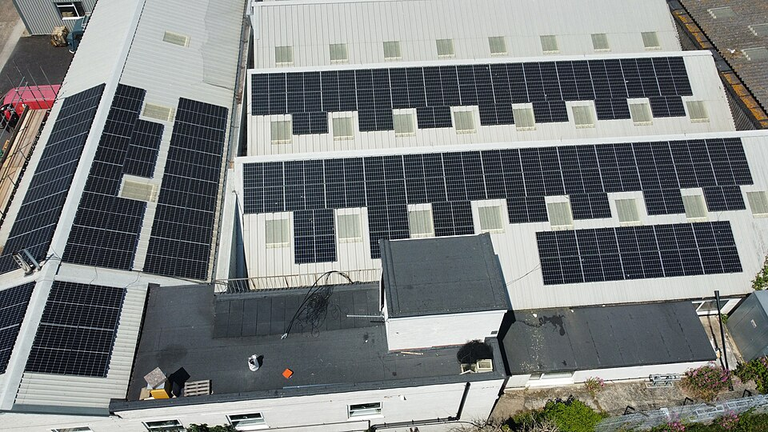
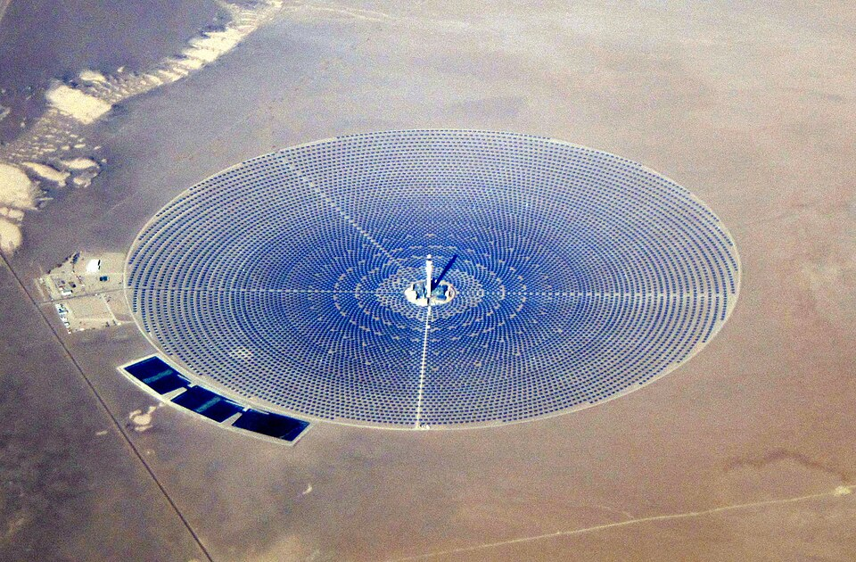
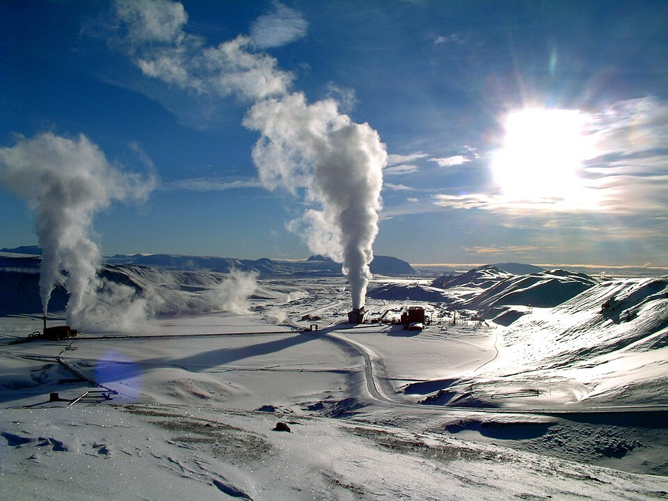
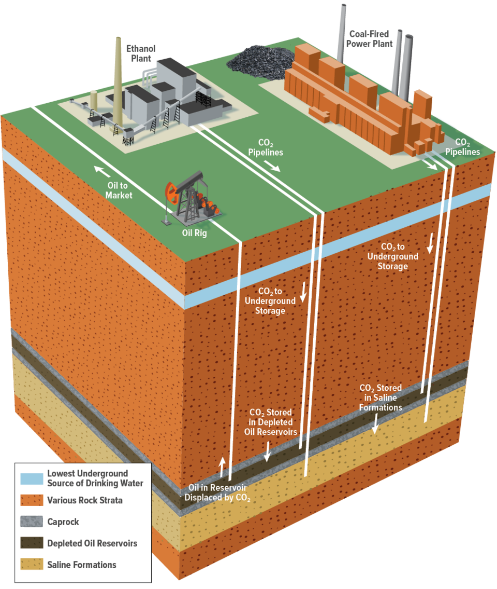
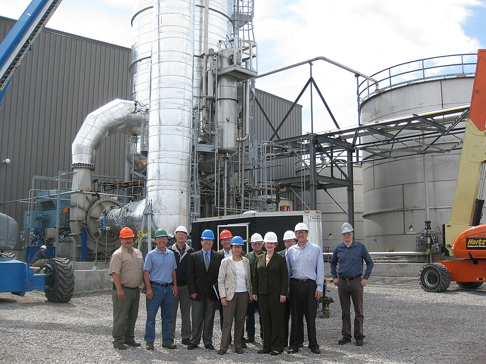

Advanced Chemical Manufacturing
for the Energy Sector
Noah Chemicals is a premier global partner for the energy sector, supplying certified, high-purity inorganic chemistries critical to thermodynamic scaling. Our analytical capabilities support advanced applications ranging from grid-scale energy storage to stringent reactor safety environments. Leveraging our expansive global sourcing network, we ensure world-class supply chain resilience, while our San Antonio facility provides strict ICP-OES validation for all mission-critical energy infrastructure chemicals.
Select Your specific application parameter.

Batteries & Energy Storage
High-purity Vanadium Pentoxide (V2O5) precursors for VRFB liquid electrolytes. Extracting 4 distinct oxidation states to eliminate cross-contamination capacity loss, alongside lithium titanate active materials.

Nuclear Energy
High-purity Boric Acid (H3BO3) chemical shims adjusting thermal neutron cross-sections. Resolving reactivity hot spots via uniform coolant dissolution, alongside strict surrogate waste feeds.
Oil & Gas Processing
Custom reagents, proprietary catalysts, and specialized inorganic halide compounds designed to optimize deepwater extraction yields and extreme pressure hydrodesulfurization efficiency.

Hydrogen Energy
Advanced catalyst precursors and high-purity inorganic electrolytes (e.g., Potassium Hydroxide) engineered for maximum ionic conductivity in commercial alkaline and PEM electrolysis.

Solar Photovoltaics
Extremely high-purity conductive salts and transparent oxides synthesized specifically to minimize trace metal lattice defects, maximizing long-term photoelectric conversion efficiency.

Solar Salts & Thermal Storage
Ultra-pure binary and ternary molten salt precursors (e.g., Sodium & Potassium Nitrates) rigorously formulated for extreme heat capacity and long-term stability in Concentrated Solar Power (CSP) applications.

Geothermal Energy
Heavy inorganic weighting agents and advanced scaling inhibitors explicitly engineered to protect downhole infrastructure against the extreme temperatures and corrosive subterranean brines of deep geothermal wells.

Carbon Capture & Storage (CCUS)
Advanced inorganic sorbents and highly soluble liquid solvents (e.g., Potassium Carbonate) explicitly formulated to aggressively bind and strip CO2 from active flue-gas and direct air capture arrays.

Biofuels & Biogas Refining
High-purity inorganic transesterification catalysts and deep desulfurization agents (e.g., Zinc Oxides) engineered to maximize yield converting raw biomass into drop-in renewable fuels.
Why Partner with Noah for the Energy Sector?
-
Unmatched Traceability & Purity From initial raw material sourcing to exhaustive ICP-OES validation, we ensure absolute, documentable chemical integrity to prevent catastrophic failures in high-stress energy environments.
-
Custom Synthesis Agility We scale seamlessly. Whether you require hundreds of grams for renewable R&D bench testing or continuous multi-ton bulk delivery for active grid deployment, our chemical engineers dictate the scale.
-
Secure Handling & NDA Compliance End-to-end material handling tailored specifically to the strict environmental constraints of volatile energy materials, executed under absolute contractual secrecy.
Lithium Fluoride: A Critical Material Powering the Future of Nuclear Energy
Read insights from our analytical team regarding the critical application of Lithium Fluoride in Molten Salt Reactors (MSRs) and advanced semiconductor innovation, highlighting the stringent purity tolerances required for next-generation energy environments.
Read Technical BriefingEnergy Procurement Validation
Absolutely. We mandate 100% lot traceability and provide extensive Certificate of Analysis (CoA) documentation generated by our internal QA lab for every single shipment, guaranteeing precise physical and chemical morphology specifications.
Yes. Through our Custom Chemical Synthesis and Toll Blending infrastructure, we regularly execute proprietary electrolyte and catalyst formulas under strict, legally binding Non-Disclosure Agreements (NDAs).
To eliminate capacity decay via cross-contamination in Vanadium Redox Flow Batteries (VRFB), we strictly enforce purity levels exceeding 99.9% on precursor V2O5, leveraging ICP-OES validation to lock out trace iron and silica.
Unlike fixed physical control rods, our high-purity Boric Acid is fully dissolved into the primary coolant loop. This creates an unvarying, uniform field of Boron-10 thermal neutron absorbers, ensuring total spatial dominance over reactivity without hot spots.
Mission-critical environments like SMRs and offshore refineries cannot tolerate supplier drift. Our San Antonio facility explicitly conducts continual ICP Mass Spectrometry on all global raw inputs, completely insulating your supply chain from unregulated adulterants.
Secure your Energy Sector supply chain.
Don't submit strict procurement tolerances to a generic form. Speak directly to our quality engineers regarding your custom synthesis or bulk sourcing constraints for your energy supply chain.